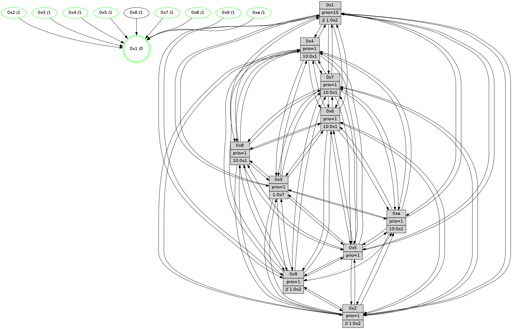

>> << IDX [start] -100 -25 -5 +0 +5 +25 +100 [895.00722909]
 Previous packets
----------------------------------------------------------------------
890.228463 beacon01(faad) #0 coord=01,02,03,04,05,06,07,0a,09,08 cycle=688.0ms assoc
-- color-indic=1 64 4c bc
890.238447 beacon02(faad) #0 coord=01,02,03,04,05,06,07,0a,09,08 cycle=688.0ms assoc 64 df 8d
890.248446 beacon03(faad) #0 coord=01,02,03,04,05,06,07,0a,09,08 cycle=688.0ms assoc 64 a5 c0
890.258447 beacon04(faad) #0 coord=01,02,03,04,05,06,07,0a,09,08 cycle=688.0ms assoc 64 d2 2a
890.268448 beacon05(faad) #0 coord=01,02,03,04,05,06,07,0a,09,08 cycle=688.0ms assoc 64 a8 67
890.278447 beacon06(faad) #0 coord=01,02,03,04,05,06,07,0a,09,08 cycle=688.0ms assoc 64 26 b0
890.288446 beacon07(faad) #0 coord=01,02,03,04,05,06,07,0a,09,08 cycle=688.0ms assoc 64 5c fd
890.298452 beacon0a(faad) #0 coord=01,02,03,04,05,06,07,0a,09,08 cycle=688.0ms assoc 64 2d f6
890.318452 beacon08(faad) #0 coord=01,02,03,04,05,06,07,0a,09,08 cycle=688.0ms assoc 64 d9 6c
890.330943 [Hello(4): seq=569 sym=5,7,6,2,3,9,8,10,1 sysInfo= stat=5:7,3,6,10/7:14,3,9,5/6:2,14,5,9/2:8,0,2,8/3:11,3,3,7/9:9,4,11,5/8:7,15,8,10/10:13,12,13,8/1:12,13,7,1]
890.333676 [Color(1) seq=250 @0:0 prio=10 >>1.@2,1.@3,1.@4]
890.335265 [Hello(8): seq=513 sym=5,2,3,4,9,6,7,1 sysInfo=hasWarning stat=5:4,10,11,11/2:2,4,6,3/3:4,4,6,11/4:9,5,5,6/9:1,1,1,0/6:5,3,3,9/7:0,1,0,0/1:6,9,3,0]
890.338138 [Hello(9): seq=513 sym=2,5,3,4,7,6,8,10,1 sysInfo=hasWarning stat=2:2,11,7,1/5:2,11,2,2/3:0,14,3,11/4:9,8,2,6/7:9,1,10,8/6:15,2,9,7/8:7,3,11,1/10:2,1,1,0/1:11,3,7,1]
890.341619 [Color(9) seq=218 @0:0 prio=1 >>1.@2,1.@3,1.@4]
890.343219 [Hello(10): seq=502 sym=6,2,3,8,5,7,4,1 asym=9 sysInfo=hasWarning stat=6:0,5,6,3/2:7,4,4,3/3:15,9,1,7/8:9,14,3,0/5:6,6,9,11/7:11,1,7,5/4:1,8,14,6/1:1,7,9,1/9:5,1,7,1]
890.345773 [Color(3) seq=210 @0:0 prio=1 >1.@7]
890.347501 [Color(8) seq=225 @0:0 prio=1 >10.@1,1.@2,1.@3,1.@5]
890.349559 [Hello(7): seq=569 sym=2,3,5,6,4,9,8,10,1 sysInfo=hasWarning stat=2:13,4,2,11/3:11,0,10,11/5:2,4,13,14/6:11,10,10,5/4:6,9,8,0/9:2,2,1,0/8:6,10,2,0/10:3,6,1,1/1:14,13,5,0]
890.353087 [Color(10) seq=190 @0:0 prio=1 >10.@1,1.@2,1.@3,1.@5]
890.356365 [Color(7) seq=175 @0:0 prio=1 >10.@1,1.@2,1.@3,1.@4]
890.358834 [Color(6) seq=212 @0:0 prio=1 >10.@1,1.@2,1.@3,1.@5]
----------------------------------------------------------------------
891.016595 beacon01(faad) #0 coord=01,02,03,04,05,06,07,0a,09,08 cycle=688.0ms assoc
-- color-indic=1 64 78 a4
891.026578 beacon02(faad) #0 coord=01,02,03,04,05,06,07,0a,09,08 cycle=688.0ms assoc 64 eb 95
891.036576 beacon03(faad) #0 coord=01,02,03,04,05,06,07,0a,09,08 cycle=688.0ms assoc 64 91 d8
891.046578 beacon04(faad) #0 coord=01,02,03,04,05,06,07,0a,09,08 cycle=688.0ms assoc 64 e6 32
891.056577 beacon05(faad) #0 coord=01,02,03,04,05,06,07,0a,09,08 cycle=688.0ms assoc 64 9c 7f
891.066578 beacon06(faad) #0 coord=01,02,03,04,05,06,07,0a,09,08 cycle=688.0ms assoc 64 12 a8
891.076578 beacon07(faad) #0 coord=01,02,03,04,05,06,07,0a,09,08 cycle=688.0ms assoc 64 68 e5
891.086581 beacon0a(faad) #0 coord=01,02,03,04,05,06,07,0a,09,08 cycle=688.0ms assoc 64 19 ee
891.106583 beacon08(faad) #0 coord=01,02,03,04,05,06,07,0a,09,08 cycle=688.0ms assoc 64 ed 74
891.118431 [Hello(3): seq=570 sym=1,7,6,2,4,8,9,10,5 sysInfo= stat=1:4,13,11,0/7:2,8,3,6/6:14,2,5,1/2:11,13,6,9/4:5,0,11,5/8:9,14,3,0/9:2,11,5,9/10:3,11,2,1/5:3,10,1,10]
891.121347 [Color(4) seq=188 @0:0 prio=1 >10.@1,1.@2,1.@3,1.@7]
891.123081 [Hello(1): seq=479 sym=4,2,9,5,10,3,8,6,7 sysInfo=coloring-mode-on,ColoringModeRequestCalled stat=4:15,8,9,0/2:4,1,5,10/9:10,1,6,3/5:15,15,13,4/10:9,15,4,1/3:10,3,3,2/8:13,1,3,0/6:7,8,1,9/7:6,8,8,11]
891.125608 [Hello(5): seq=570 sym=7,6,4,3,1,9,8,10,2 sysInfo=hasWarning stat=7:5,15,11,7/6:15,8,7,9/4:0,8,9,5/3:1,11,1,9/1:6,11,6,1/9:11,11,6,2/8:15,8,3,7/10:13,15,1,3/2:3,7,2,0]
891.128432 [Color(5) seq=223 @0:0 prio=1]
891.131797 PARSE ERROR************************
Traceback (most recent call last):
File "PacketAnalysis.py", line 167, in showOperaPacket
structPacket = OperaPacketParse.parsePacket(rawPacket)
File "../../pkg-python/HipSens/Core/OperaPacketParse.py", line 461, in parsePacket
return parseHelloMessage(data)
File "../../pkg-python/HipSens/Core/OperaPacketParse.py", line 125, in parseHelloMessage
struct.unpack("!H",linkList[:2])[0])
error: unpack requires a string argument of length 2
48 34 02 00 02 36 00 02 02 12 04 00 05 00 07 00 06 00 03 00 09 00 08 00 0a 00 01 00 53 04 00 02 00 00 4c 12 40 69 15 f8 8b f7 75 de 53 41 24 8c 71 cf 84 2b 14 93 4d c0
891.135263 [Color(2) seq=215 @0:0 prio=1 >>1.@2,1.@3,1.@4]
891.138830 [Hello(6): seq=570 sym=2,3,5,4,7,9,8,10,1 sysInfo= stat=2:7,1,1,7/3:3,1,8,9/5:1,14,9,12/4:1,11,1,0/7:13,14,5,4/9:14,9,8,2/8:10,0,2,0/10:13,14,14,9/1:8,13,1,1]
----------------------------------------------------------------------
891.804725 beacon01(faad) #0 coord=01,02,03,04,05,06,07,0a,09,08 cycle=688.0ms assoc
-- color-indic=1 64 c4 a1
891.814708 beacon02(faad) #0 coord=01,02,03,04,05,06,07,0a,09,08 cycle=688.0ms assoc 64 57 90
891.824710 beacon03(faad) #0 coord=01,02,03,04,05,06,07,0a,09,08 cycle=688.0ms assoc 64 2d dd
891.834708 beacon04(faad) #0 coord=01,02,03,04,05,06,07,0a,09,08 cycle=688.0ms assoc 64 5a 37
891.844709 beacon05(faad) #0 coord=01,02,03,04,05,06,07,0a,09,08 cycle=688.0ms assoc 64 20 7a
891.854709 beacon06(faad) #0 coord=01,02,03,04,05,06,07,0a,09,08 cycle=688.0ms assoc 64 ae ad
891.864709 beacon07(faad) #0 coord=01,02,03,04,05,06,07,0a,09,08 cycle=688.0ms assoc 64 d4 e0
891.874713 beacon0a(faad) #0 coord=01,02,03,04,05,06,07,0a,09,08 cycle=688.0ms assoc 64 a5 eb
891.894714 beacon08(faad) #0 coord=01,02,03,04,05,06,07,0a,09,08 cycle=688.0ms assoc 64 51 71
891.906561 [Hello(4): seq=570 sym=5,7,6,2,3,9,8,10,1 sysInfo= stat=5:8,4,6,10/7:15,4,9,5/6:3,15,5,9/2:9,1,2,8/3:12,4,3,7/9:10,5,11,5/8:8,0,8,10/10:14,13,13,8/1:13,14,7,1]
891.909608 [Color(6) seq=213 @0:0 prio=1 >10.@1,1.@2,1.@3,1.@5]
891.912429 [Hello(9): seq=514 sym=2,5,3,4,7,6,8,10,1 sysInfo=hasWarning stat=2:3,12,7,1/5:3,12,2,2/3:1,15,3,11/4:10,9,2,6/7:10,2,10,8/6:0,3,9,7/8:7,4,11,1/10:3,2,1,0/1:12,3,7,1]
891.917228 [STC(1) #0.111 tree-change,inconsistent-stability,stable,to-color d=0]
891.918847 [Color(1) seq=251 @0:0 prio=10 >>1.@2,1.@3,1.@4]
891.920983 [Hello(10): seq=503 sym=6,2,3,8,5,7,4,1 asym=9 sysInfo=hasWarning stat=6:1,6,6,3/2:8,5,4,3/3:0,9,1,7/8:9,14,3,0/5:7,7,9,11/7:11,2,7,5/4:2,9,14,6/1:2,7,9,1/9:5,1,7,1]
891.924688 [Hello(8): seq=514 sym=5,2,3,4,9,6,7,1 sysInfo=hasWarning stat=5:5,11,11,11/2:3,5,6,3/3:5,4,6,11/4:10,6,5,6/9:1,1,1,0/6:6,4,3,9/7:1,2,0,0/1:7,9,3,0]
891.928796 [Color(10) seq=191 @0:0 prio=1 >10.@1,1.@2,1.@3,1.@5]
891.931302 [Hello(7): seq=570 sym=2,3,5,6,4,9,8,10,1 sysInfo=hasWarning stat=2:14,5,2,11/3:12,0,10,11/5:3,5,13,14/6:12,11,10,5/4:7,10,8,0/9:2,2,1,0/8:6,10,2,0/10:3,6,1,1/1:15,13,5,0]
891.934743 [Color(7) seq=176 @0:0 prio=1 >10.@1,1.@2,1.@3,1.@4]
891.942361 [Color(8) seq=226 @0:0 prio=1 >10.@1,1.@2,1.@3,1.@5]
----------------------------------------------------------------------
892.592855 beacon01(faad) #0 coord=01,02,03,04,05,06,07,0a,09,08 cycle=688.0ms assoc
-- color-indic=1 64 00 af
892.602837 beacon02(faad) #0 coord=01,02,03,04,05,06,07,0a,09,08 cycle=688.0ms assoc 64 93 9e
892.612838 beacon03(faad) #0 coord=01,02,03,04,05,06,07,0a,09,08 cycle=688.0ms assoc 64 e9 d3
892.622836 beacon04(faad) #0 coord=01,02,03,04,05,06,07,0a,09,08 cycle=688.0ms assoc 64 9e 39
892.632838 beacon05(faad) #0 coord=01,02,03,04,05,06,07,0a,09,08 cycle=688.0ms assoc 64 e4 74
892.642839 beacon06(faad) #0 coord=01,02,03,04,05,06,07,0a,09,08 cycle=688.0ms assoc 64 6a a3
892.652837 beacon07(faad) #0 coord=01,02,03,04,05,06,07,0a,09,08 cycle=688.0ms assoc 64 10 ee
892.662843 beacon0a(faad) #0 coord=01,02,03,04,05,06,07,0a,09,08 cycle=688.0ms assoc 64 61 e5
892.682844 beacon08(faad) #0 coord=01,02,03,04,05,06,07,0a,09,08 cycle=688.0ms assoc 64 95 7f
892.694634 [Hello(3): seq=571 sym=1,7,6,2,4,8,9,10,5 sysInfo= stat=1:5,14,12,0/7:3,9,3,6/6:15,2,5,1/2:12,14,6,9/4:6,1,11,5/8:10,15,3,0/9:2,11,5,9/10:4,12,2,1/5:4,11,1,10]
892.697116 [Hello(1): seq=480 sym=4,2,9,5,10,3,8,6,7 sysInfo=coloring-mode-on,ColoringModeRequestCalled stat=4:0,8,9,0/2:5,2,5,10/9:10,1,6,3/5:0,0,13,4/10:10,0,4,1/3:10,3,3,2/8:14,2,3,0/6:8,8,1,9/7:7,9,8,11]
892.699836 [STC(4)->1 #0.111 tree-change,inconsistent-stability,stable,to-color d=1]
892.704910 [STC(2)->1 #0.111 tree-change,inconsistent-stability,stable,to-color d=1]
892.706516 [STC(9)->1 #0.111 tree-change,inconsistent-stability,stable,to-color d=1]
892.709100 [Color(4) seq=189 @0:0 prio=1 >10.@1,1.@2,1.@3,1.@7]
892.711821 [Color(2) seq=216 @0:0 prio=1 >>1.@2,1.@3,1.@4]
892.713505 [Hello(6): seq=571 sym=2,3,5,4,7,9,8,10,1 sysInfo= stat=2:7,1,1,7/3:3,1,8,9/5:1,14,9,12/4:2,11,1,0/7:14,15,5,4/9:15,9,8,2/8:11,1,2,0/10:14,15,14,9/1:8,14,2,1]
892.717024 [STC(5)->1 #0.111 tree-change,inconsistent-stability,stable,to-color d=1]
892.719020 [STC(6)->1 #0.111 to-color d=1]
892.722450 [Color(5) seq=224 @0:0 prio=1]
892.726502 [STC(3)->1 #0.111 tree-change,inconsistent-stability,stable,to-color d=1]
----------------------------------------------------------------------
893.380985 beacon01(faad) #0 coord=01,02,03,04,05,06,07,0a,09,08 cycle=688.0ms assoc
-- color-indic=1 64 bc aa
893.390968 beacon02(faad) #0 coord=01,02,03,04,05,06,07,0a,09,08 cycle=688.0ms assoc 64 2f 9b
893.400967 beacon03(faad) #0 coord=01,02,03,04,05,06,07,0a,09,08 cycle=688.0ms assoc 64 55 d6
893.410968 beacon04(faad) #0 coord=01,02,03,04,05,06,07,0a,09,08 cycle=688.0ms assoc 64 22 3c
893.420968 beacon05(faad) #0 coord=01,02,03,04,05,06,07,0a,09,08 cycle=688.0ms assoc 64 58 71
893.430968 beacon06(faad) #0 coord=01,02,03,04,05,06,07,0a,09,08 cycle=688.0ms assoc 64 d6 a6
893.440970 beacon07(faad) #0 coord=01,02,03,04,05,06,07,0a,09,08 cycle=688.0ms assoc 64 ac eb
893.450974 beacon0a(faad) #0 coord=01,02,03,04,05,06,07,0a,09,08 cycle=688.0ms assoc 64 dd e0
893.470974 beacon08(faad) #0 coord=01,02,03,04,05,06,07,0a,09,08 cycle=688.0ms assoc 64 29 7a
893.483793 [Hello(4): seq=571 sym=5,7,6,2,3,9,8,10,1 sysInfo= stat=5:8,5,7,10/7:0,5,9,5/6:4,0,6,9/2:9,2,2,8/3:13,4,4,7/9:11,6,11,5/8:9,1,8,10/10:15,14,13,8/1:14,15,8,1]
893.486833 [Hello(10): seq=504 sym=6,2,3,5,7,4,1 asym=9 sysInfo=hasWarning stat=6:2,6,7,3/2:9,6,5,3/3:1,9,2,7/5:7,8,10,11/7:12,3,7,5/4:3,10,15,6/1:3,7,9,1/9:5,1,8,1]
893.489841 [Hello(7): seq=571 sym=2,3,5,6,4,9,8,10,1 sysInfo=hasWarning stat=2:15,6,3,11/3:13,0,11,11/5:3,6,14,14/6:13,11,11,5/4:8,11,9,0/9:2,2,2,0/8:6,11,2,0/10:3,6,1,1/1:0,13,5,0]
893.492405 [Color(3) seq=212 @0:0 prio=1 >1.@7]
893.494015 [Color(10) seq=192 @0:0 prio=1 >10.@1,1.@2,1.@3,1.@5]
893.495668 [Color(7) seq=177 @0:0 prio=1 >10.@1,1.@2,1.@3,1.@4]
893.497795 [Hello(8): seq=515 sym=5,2,3,4,9,6,7,1 sysInfo=hasWarning stat=5:5,12,12,11/2:4,6,7,3/3:6,4,7,11/4:11,7,6,6/9:1,1,2,0/6:7,4,4,9/7:1,2,0,0/1:8,9,3,0]
893.502073 [Color(8) seq=227 @0:0 prio=1 >10.@1,1.@2,1.@3,1.@5]
893.505161 [Hello(9): seq=515 sym=2,5,3,4,7,6,8,10,1 sysInfo=hasWarning stat=2:3,13,7,1/5:3,13,3,2/3:1,15,4,11/4:11,10,2,6/7:11,3,10,8/6:1,4,10,7/8:8,5,11,1/10:4,3,1,0/1:12,4,8,1]
893.507996 [Color(9) seq=220 @0:0 prio=1 >>1.@2,1.@3,1.@4]
893.512016 [Color(1) seq=252 @0:0 prio=10 >>1.@2,1.@3,1.@4]
----------------------------------------------------------------------
894.169114 beacon01(faad) #0 coord=01,02,03,04,05,06,07,0a,09,08 cycle=688.0ms assoc
-- color-indic=1 64 28 73
894.179096 beacon02(faad) #0 coord=01,02,03,04,05,06,07,0a,09,08 cycle=688.0ms assoc 64 bb 42
894.189097 beacon03(faad) #0 coord=01,02,03,04,05,06,07,0a,09,08 cycle=688.0ms assoc 64 c1 0f
894.199097 beacon04(faad) #0 coord=01,02,03,04,05,06,07,0a,09,08 cycle=688.0ms assoc 64 b6 e5
894.209098 beacon05(faad) #0 coord=01,02,03,04,05,06,07,0a,09,08 cycle=688.0ms assoc 64 cc a8
894.219096 beacon06(faad) #0 coord=01,02,03,04,05,06,07,0a,09,08 cycle=688.0ms assoc 64 42 7f
894.229098 beacon07(faad) #0 coord=01,02,03,04,05,06,07,0a,09,08 cycle=688.0ms assoc 64 38 32
894.239102 beacon0a(faad) #0 coord=01,02,03,04,05,06,07,0a,09,08 cycle=688.0ms assoc 64 49 39
894.259105 beacon08(faad) #0 coord=01,02,03,04,05,06,07,0a,09,08 cycle=688.0ms assoc 64 bd a3
894.270283 [Hello(6): seq=572 sym=2,3,5,4,7,9,8,10,1 sysInfo= stat=2:7,1,1,7/3:3,2,9,9/5:1,15,9,12/4:3,11,1,0/7:15,0,5,4/9:0,10,8,2/8:12,2,2,0/10:15,0,14,9/1:8,15,2,1]
894.274288 [Hello(2): seq=568 sym=4,5,7,6,3,9,8,10,1 sysInfo=hasWarning stat=4:11,7,0,4/5:8,0,6,1/7:9,1,11,8/6:0,14,6,7/3:3,5,4,5/9:14,9,4,2/8:1,14,1,7/10:13,4,4,8/1:4,11,5,1]
894.276897 [Hello(1): seq=481 sym=4,2,9,5,10,3,8,6,7 sysInfo=coloring-mode-on,ColoringModeRequestCalled stat=4:1,9,10,0/2:6,3,6,10/9:10,1,7,3/5:0,1,14,4/10:10,0,4,1/3:10,3,4,2/8:14,2,3,0/6:9,8,2,9/7:7,9,8,11]
894.279840 [Hello(5): seq=572 sym=7,6,4,3,1,9,8,10,2 sysInfo=hasWarning stat=7:7,1,11,7/6:0,9,7,9/4:2,8,9,5/3:3,12,2,9/1:7,13,7,1/9:13,13,6,2/8:1,10,3,7/10:15,1,1,3/2:4,8,2,0]
894.282455 [Color(4) seq=190 @0:0 prio=1 >10.@1,1.@2,1.@3,1.@7]
894.286004 [Color(5) seq=225 @0:0 prio=1]
894.288474 [Hello(3): seq=572 sym=1,7,6,2,4,8,9,10,5 sysInfo= stat=1:5,15,12,0/7:3,10,3,6/6:15,2,5,1/2:12,14,6,9/4:7,1,11,5/8:11,0,3,0/9:3,12,5,9/10:4,13,2,1/5:4,11,1,10]
894.290938 [Color(2) seq=217 @0:0 prio=1 >>1.@2,1.@3,1.@4]
----------------------------------------------------------------------
894.957245 beacon01(faad) #0 coord=01,02,03,04,05,06,07,0a,09,08 cycle=688.0ms assoc
-- color-indic=1 64 94 76
894.967227 beacon02(faad) #0 coord=01,02,03,04,05,06,07,0a,09,08 cycle=688.0ms assoc 64 07 47
894.977229 beacon03(faad) #0 coord=01,02,03,04,05,06,07,0a,09,08 cycle=688.0ms assoc 64 7d 0a
894.987227 beacon04(faad) #0 coord=01,02,03,04,05,06,07,0a,09,08 cycle=688.0ms assoc 64 0a e0
894.997229 beacon05(faad) #0 coord=01,02,03,04,05,06,07,0a,09,08 cycle=688.0ms assoc 64 70 ad